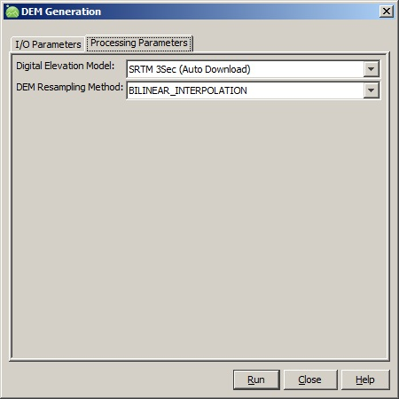

DEM Generation Operator
This operator converts interferometric phase to digital elevation map. Input and
Output
- The
input to this operator the output of Stitch operator.
- The unwrapped phase band is located by unit (abs_phase, as set by Snaphu Import),
falling back to a band name starting with "Unw".
- The output of this operator is the elevation band.
Methods
Two phase-to-height conversions are available. They differ in how the phase
ambiguity is referenced and in whether a DEM is required.
- DEM Seed (default) — the phase-to-height relation is linearised
about a single reference (height, phase) pair. That reference is solved by
least squares from 150 low-slope seed points sampled from a DEM, and the
height of ambiguity at each pixel is derived from the local perpendicular
and parallel baseline. Requires a DEM and the latitude, longitude,
incidence angle and slant range time tie point grids.
- Schwabisch — the Doris polynomial method. Reference phase is
evaluated from the precise orbits at several altitudes in a set of points
distributed over the scene; a 1D polynomial in phase is fitted for the
height at each point, and each of its coefficients is then modelled as a
2D polynomial in (line, pixel). This captures the spatial variation and
the nonlinearity of the phase-to-height relation and needs
no DEM. This method was previously exposed as the separate
"Phase to Height" operator, which is now deprecated.
Parameters Used
The following processing parameters are needed for this operator (see Figure
1):
- Method: DEM Seed or Schwabisch, as described above.
- Orbit Interpolation Degree: Degree of the polynomial orbit interpolator.
DEM Seed only:
- Digital Elevation Model: The digital elevation model used in reference height calculation.
- DEM Resampling Method: The resampling method used in getting elevation from DEM.
Schwabisch only:
- Number of estimation points: Number of points at which reference phase is evaluated.
Must be at least the number of coefficients of the 2D polynomial.
- Number of height samples: Number of height samples in the range [0, 5000) m.
- Degree of 1D polynomial: Degree of the polynomial fitting height against reference phase.
- Degree of 2D polynomial: Degree of the polynomial fitting the 1D coefficients across the scene.

Figure 1. DEM Generation operator UI
Reference:
[1] MARK A. RICHARDS, "A Beginner’s Guide to
Interferometric SAR Concepts and Signal Processing," IEEE A&E
SYSTEMS MAGAZINE VOL. 22, NO. 9 SEPTEMBER 2007
[2] Bert Kampes, Stefania Usai, "Doris: The Delft Object-oriented Radar
Interferometric Software," 2nd International Symposium on Operationalization
of Remote Sensing, Enschede, 1999. (Schwabisch slant-to-height method)